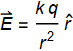
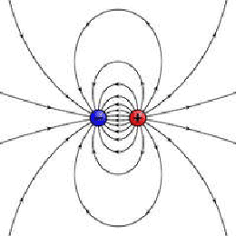
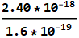
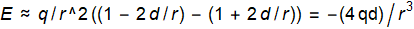
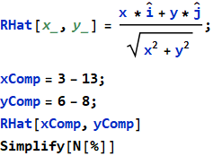
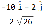
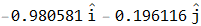
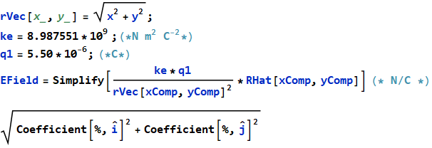
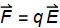
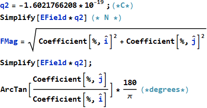

Exam Like Questions
Module 1
T/F
1) A charged particle is located at the origin. Its electric field at any field point depends on the charge at that field point.
Answer: FALSE
The field of a charge depends only on the charge in question.

2) An electric dipole requires two opposite electric charges.
Answer: TRUE

A dipole consists of two charges of equal magnitude with opposite signs
Multiple Choice
1) The number of protons that would be needed to make a net charge of 2.40 x C is: a) 150, b) 15, c) 1.5 , or d) 1
Answer: B
Charge of a proton: C


2) The electric dipoles electric field is proportional to which power of distance: a) 1/r , b) , c) , or d)
Answer: C
E ∝ q/(r + d)^2 − q/(r - d)^2 =
q/r^2 ((1/(1 + d/r)) - (1/(1 - d/r)))
Taylor Expansion: 
Vector Manipulation Exercise
1) Calculate the electric field at field point 3 + 6 (m) created by a 5.50 μC electric charge at 13  + 8 (m).
+ 8 (m).
Answer: {E}=475.3 N/C




2) Calculate the electric force on an electron at field point 3 + 6 (m) and in the same electric field calculated for the prior problem. (Hint the force is a vector and has a magnitude and a direction)
Answer: {F}= N and the direction is 11.3°
Continue from problem 1

